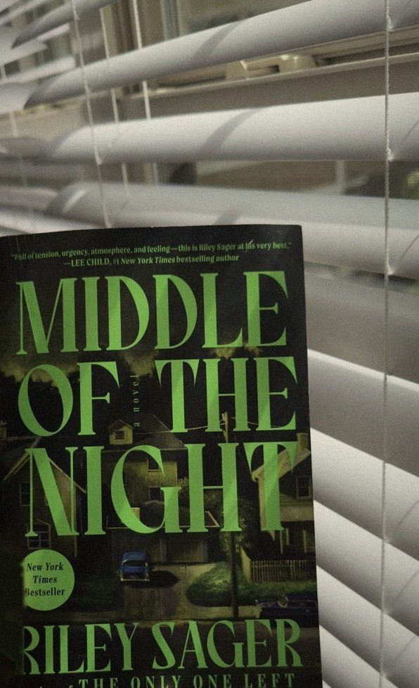
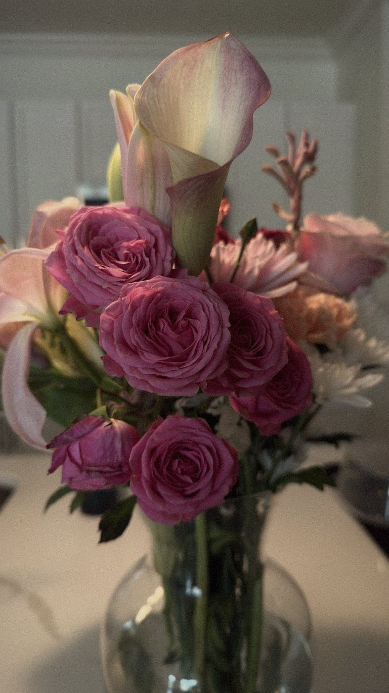
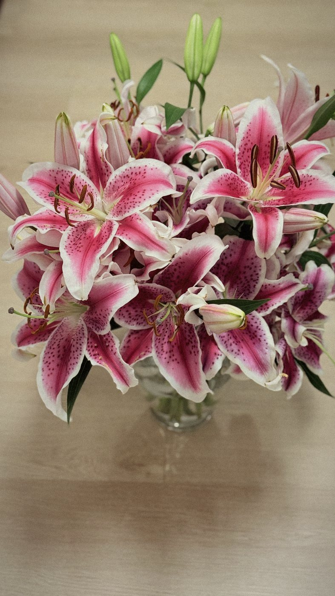
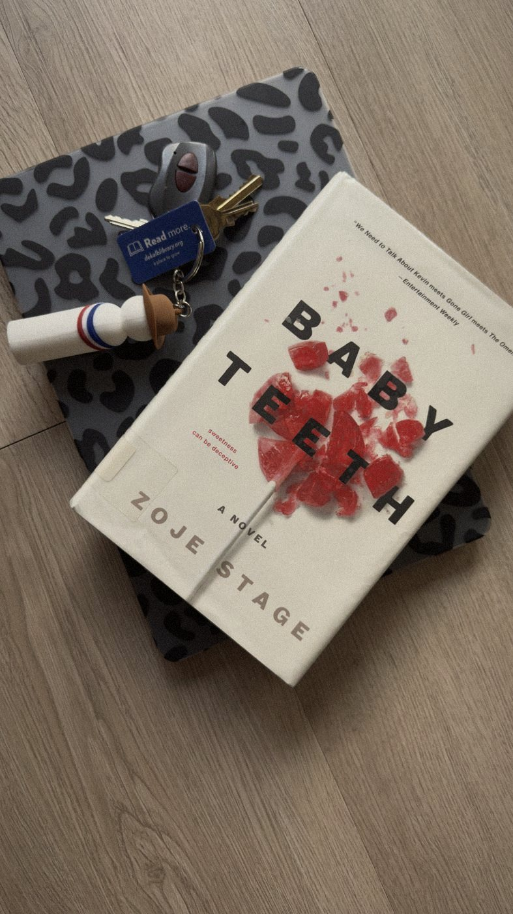
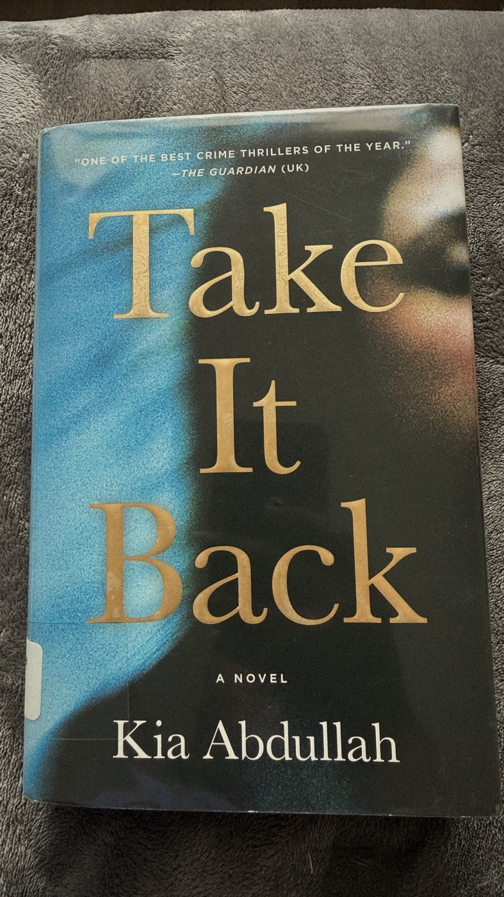
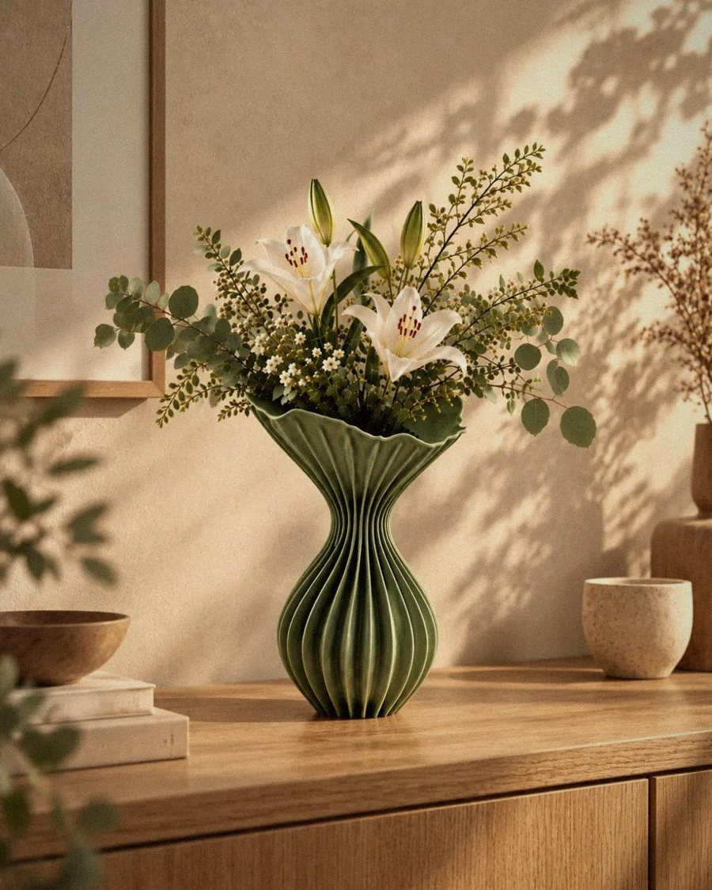

Review[Date][N] min read
Middle of the Night, Riley Sager
[Your headline: what the book did to you, not what it's about]
[Opening two lines of the review.]
Keep readingPrologue
Yet every book I've read, good and bad , leaves me pressed between pages.
From the mountains of Achebe to the hills of Morrison, from the East to the South: file the books with me, share your reviews and read mine. And if anyone's words have ever made you
Pick a different word up there and the question changes. Answer whichever one is true today.
Chapter I
Whatever I'm halfway through, open to the page I stopped on.
Chapter II
{{shelfNote}}

What stayed with me
[Two or three sentences. The scene, line or idea I still think about.]
Read the full entryMy favourite shelf
bil·dungs·ro·man /ˈbɪl.dʊŋz.roʊˌmɑːn/ noun
A novel about growing up. Someone starts out as one person and, a few hundred pages later, has become another.
From German: Bildung, formation, and Roman, novel.
It's my favourite kind of book. Anything on this shelf wears a pink ribbon on its spine, so you can spot it from across the room.
Browse the bildungsroman shelf
Interlude
Someone keeps bringing home.
I'll keep reading next to them, even if they wilt.
See every bouquet

Chapter III
Journal entries are for me. Reviews are for you. Both end up here, newest first.

Middle of the Night, Riley Sager
[Opening two lines of the review.]
Keep reading

Chapter IV
